ФілософськіДурнідумки
Справа №008Де то є, Харків?
Випуск №2
Харків — не тільки місто на карті
Секретна справа №008 про Харків. Зниклі письменники Будинку «Слово». Героїня номера — вчителька Алекс. Гра «Арея», дві школи і вірш Жадана.
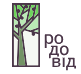
Українська школа «Родовід» Копенгаген · rodovid.dkГазету роблять учні старших класів школи «Родовід». Редакція — пані Анастасія.
Шпигун «Родоводу» береться за Харків. Зниклі письменники Будинку «Слово». Героїня номера — вчителька Алекс. І дві школи: українська проти данської.
Виходить що два тижні. Пишуть учні старших класів школи «Родовід».
Бо, можливо, перед вами стоїть ціла книга. І, можливо, це книга, яку ви пошкодуєте, що так і не прочитали.
пані Анастасія
Люди, які поруч →Чим більше він дізнавався, тим більше розумів, наскільки великий Харків. Я ще повернуся.
Олександра
Секретна справа №008 →Якби можна було змішати дві школи, я б залишив навчання з української, а людей — з данської.
Мирослав
Українська vs данська школа →Газету роблять учні старших класів школи «Родовід».
Вчителі пропонують тему номера голосуванням. Діти опрацьовують запропоновані статті — щоразу різні. Цілі два тижні пишуть і малюють, а потім читають одне одному вголос.
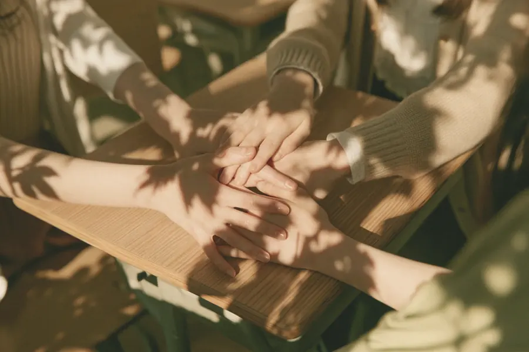
Від першого і дотепер. Новий виходить раз на два тижні.
Секретна справа №008 про Харків. Зниклі письменники Будинку «Слово». Героїня номера — вчителька Алекс. Гра «Арея», дві школи і вірш Жадана.
Секретна справа №007 у бібліотеці. Олена Черепня із Сєвєродонецька — про перший день війни і про те, що таке дім. Ментори, які хочуть худі. Діалекти, ребус і фото-загадка.
Відомо лише, що там буде відповідь на ребус і продовження справи. Агент досі не спить.
Ви тримаєте в руках перший випуск шкільної газети «Родоводу»! Цього разу старші учні вирішили спробувати себе в ролі журналістів. Ми ходили, розпитували, шукали цікаві історії, щось вигадували, щось розслідували і навіть трохи підглядали за шкільним життям.
Тут ми хочемо розповісти про те, що відбувається у нашій школі, про людей, яких не завжди помічаємо, і про речі, які можуть бути цікавими не тільки вчителям, а й нам самим.
Можливо, десь ми написали неідеально. Можливо, десь буде смішно. А може, ви навіть знайдете себе на цих сторінках. Тож перегортайте сторінку. Наше перше журналістське розслідування починається!
Місія: проникнути в бібліотеку. Завдання: з'ясувати, які книжки учні крадуть… Стоп! Не крадуть. Беруть почитати. Агент трохи перенервував.
Я тихенько пробрався між полицями, увімкнув режим «не помічайте мене» і почав стеження.
Також були помічені: Маленький принц, Полліанна, Лісова пісня, Митькозавр із Юрківки та ще ціла купа книжкових підозрюваних.
Особливо підозріло поводяться нові книжки. Учні їх розглядають, шепочуться, радять друзям і потім… виносять із бібліотеки! Але спокійно. Це дозволено.
Висновок агента: бібліотека працює. Книжки зникають із полиць. Учні читають.
Справа поки що закрита. Але агент продовжує стеження…
Олександра · таємний агент «Родоводу»
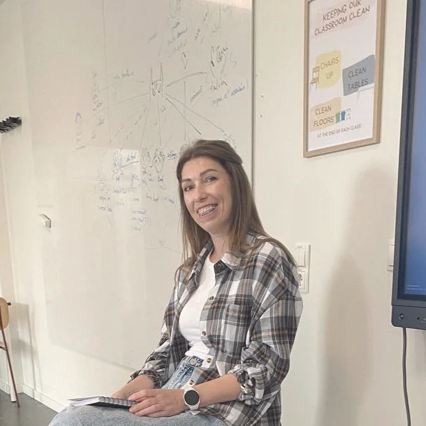
Нещодавно до нас у школу приходила Олена Черепня із Сєвєродонецька. Вона розповідала про своє життя і про те, як почалася війна.
Якщо чесно, спочатку я не дуже розумів, що саме вона буде розповідати. Ну, людина з Луганщини, війна, виїхали… Я так багато бачив переселенців. Але коли вона почала говорити про своє місто, все стало якось по-іншому. Бо це вже не просто новини. Це місто, де вона жила.
Олена сказала, що вони виїхали із Сєвєродонецька в перший день московського вторгнення, коли її сину було два дні. Зараз це Іван — і він у нашому класі.
Я тоді подумав: а як це взагалі — прокинутися одного дня і зрозуміти, що треба їхати з дому? Просто бо відбувається не зрозуміле… 2014 рік. Просто взяти речі і поїхати, бо реально небезпечно.
Вона розповіла, що до травня вони жили в селі з мишами в підлозі. Додому вони змогли повернутися тільки через чотири місяці. Туди, де вже побували чужі… майже такі, як у фільмі…
До війни в Олени та її чоловіка був свій бізнес. Вони працювали. Планували щось на майбутнє. Виховували дітей. Тобто жили звичайним життям.
Я задумався. Бо коли ми думаємо про людей, які живуть біля війни, здається, що вони завжди тільки і думають про війну. А насправді до цього вони просто ходили на роботу, купували продукти, говорили про якісь дрібниці, будували плани на наступний місяць. А потім одного ранку все це може закінчитися.
Зараз чоловік Олени проходить лікування в Данії. А сама вона сказала: «Я сумую за відчуттям дому». Але повернутися вже не зможуть назад. Люди, які там залишилися, теж зробили свій вибір — хтось важкий, а хтось ні…
Ще Олена розповіла про пожежі, які були на Луганщині у 2020 році. Вона казала, що тоді горіли дуже великі території: ліси, населені пункти. Все було одночасно і навмисно підпалено ворогом. Було багато диму. Людям було важко дихати.
За її словами, були випадки, коли люди помирали цілими сім'ями через смог і отруєння димом. Це два різних усвідомлення: війна почалася 2014 року чи 2022-го… як для кого.
Випалено більше 120 тисяч гектарів для очищення шляху зі сторони московитів. Дітей вивозили в распіраторах, і можна було легко помилитися з напрямком — ти тікаєш чи їдеш у пекло. Я раніше взагалі не знав про ці пожежі.
«Тримайтеся разом. Підтримуйте одне одного». Спочатку я подумав: ну, звичайні слова. А потім ще довго про них думав.
Бо насправді ми зараз часто кожен сам по собі. Хтось посварився — і вже не хоче говорити. Хтось образився — і може місяцями не спілкуватися. А війна показує, що все це може бути дуже дрібним.
Мені здається, найстрашніше — це коли люди перестають бути людьми один для одного.
І тепер, коли я чую слово «Луганщина», я думаю вже не тільки про карту України. Я думаю про людей. Про тих, хто там жив. Не забуватиму це…
Мирослав
Цього року в нашій школі з'явилася нова роль — ментори. А хто такі ментори? Ментори — це помічники вчителів.
Вони можуть допомагати на уроках і взагалі робити шкільне життя трохи легшим. Але нам стало цікаво: а що самі ментори хочуть робити? Ми запитали їх.
«Хочемо піти до молодших класів!» «До середніх класів!» Але є ще одна дуже важлива справа.
Худі!
І не просто худі, а п'ять зірок для худі! Тепер ми знаємо, що ментори хочуть допомагати молодшим, середнім і, можливо, навіть рятувати школу від нудьги.
А куди вони підуть насправді — побачимо!
Мія
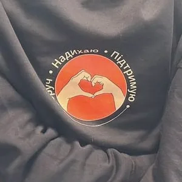
«Не кажи подружці, а скажи подушці»
Поширена порада тримати свої таємниці при собі.
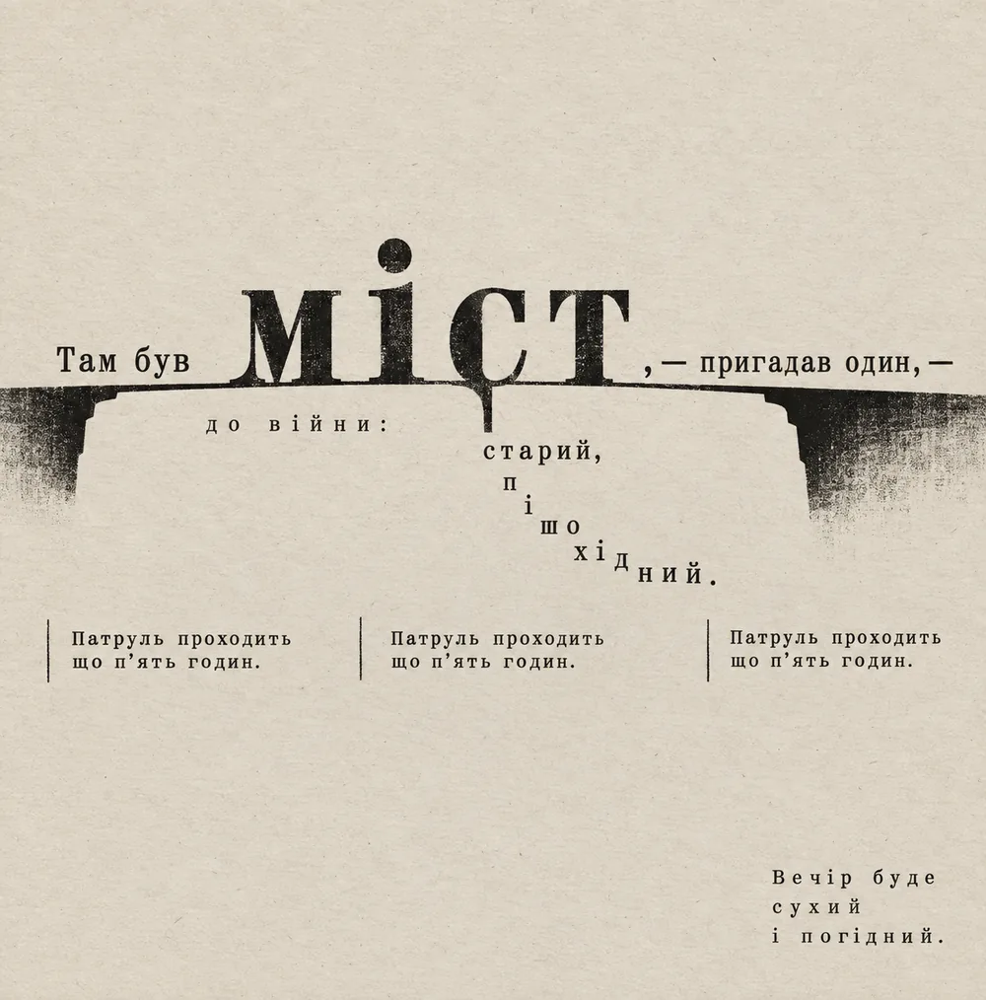
Вірш — Сергій Жадан. Арт-рішення й верстка — Анастасія Ковальчук.
Дві таблиці з літерами. У першій сховано вісім слів, у другій — шість. Слова можуть бути записані горизонтально, вертикально й навіть у зворотному напрямку.
Випиши перші літери знайдених слів і прочитай назву області України.
Підказка: вона є в цьому ж номері. І не один раз.
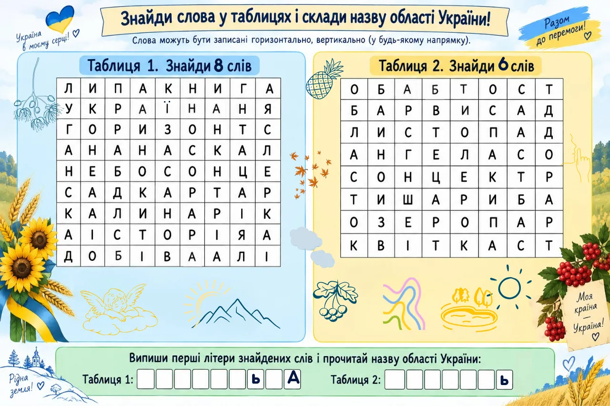
Всі приходять красиві та нарядні. Під час свята першого дзвоника дарують букети вчителям. На святі першого дзвоника співають різні пісні. Після того є урок миру. Там говорять про мир та історії України. А під кінець розмовляють про те, хто як літо провів.
Далі починається перший шкільний день по-різному. Діти з вчителями розмовляють про те, як вони провели канікули, та уроки закінчуються у дванадцятій.
Мишко
| Слово | Данською | Що означає |
|---|---|---|
| Брашно | føde · mad | Їжа, харчі. У давнину цим словом називали все, що людина їла, особливо приготовану їжу. |
| Жупан | kaftan · gammel overdragt | Старовинний верхній одяг, який носили чоловіки та заможні люди. Був поширений в Україні та інших країнах Східної Європи. |
| Ладо | min elskede · min kære | Давнє слово, пов'язане з коханою людиною, чоловіком або дружиною. Також використовувалося як ласкаве звертання в народних піснях. |
| Тисяцький | tusindfører | Давня назва військового або адміністративного керівника, який очолював великий загін людей. Походить від слова «тисяча». |
| Стезя | vej · livsvej | Дорога, шлях або життєвий шлях людини. У давній мові слово могло означати буквально дорогу, але в літературі часто мало переносне значення. |
| Рать | hær · krigshær | Військо або військовий похід. Наприклад, у давніх текстах «зібрати рать» означало зібрати військо для походу. |
| Отрок | yngling · ung mand | Юнак або підліток. У давнину так могли називати молодого чоловіка, а також молодого слугу при князеві чи воїні. |
Аліса та Софія
Могила-Мечетна — найвища точка Луганщини. Найвища точка Данії, Møllehøj, — 170 м.
Довжина Сіверського Дінця. Темза — 346 км. Тобто майже втричі коротша.
Площа Луганщини. Уся Данія — 42 900 км². Виходить приблизно дві третини.
Рік, коли на річці Лугань заклали ливарний завод. Із нього виросло місто Луганськ.
У Луганську народився Володимир Даль — укладач словника, що підписувався «Козак Луганський».
Висота, яку першим у світі взяв із жердиною Сергій Бубка. Він теж із Луганська.
Луганський природний заповідник, створений 1968 року. Там живуть бабаки.
Приблизний вік Деркульського кінного заводу — одного з найстаріших у світі.
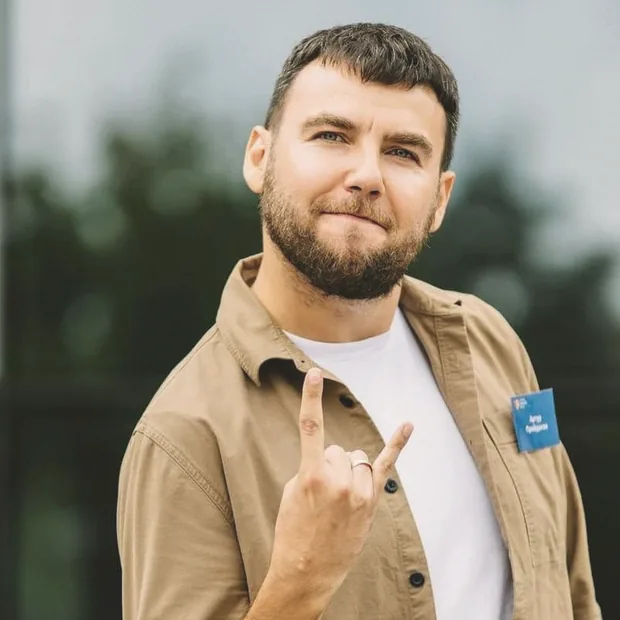
Артур Пройдаков народився в Кадіївці на Луганщині. Викладає українську мову й літературу і став першим українцем, який дійшов до десятки найкращих учителів світу.
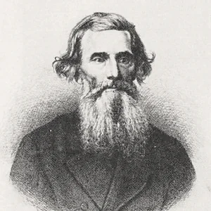
Володимир Даль народився в Луганську 1801 року. Він збирав слова — десятки тисяч — і підписував свої книжки псевдонімом за назвою рідного міста.
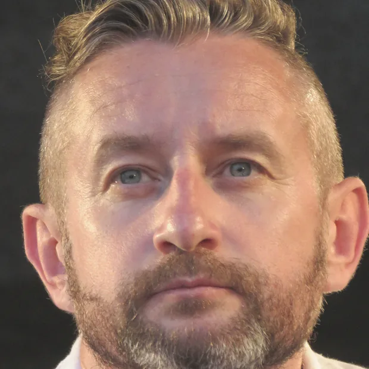
Сергій Жадан народився 1974 року в Старобільську на Луганщині. Поет, прозаїк і музикант. Саме його вірш став арт-роботою цього номера.
Фото: Mariusz KubikСтеповий гризун, який зимує по пів року й прокидається, коли степ уже зелений. Через розорювання степів бабаків стало мало — тому для них зробили заповідник.
Українською кажуть «спить як бабак» — про того, кого вранці не добудишся. Данці в такому разі кажуть «sover som en sten», спить як камінь. Камінь, звісно, не такий симпатичний.
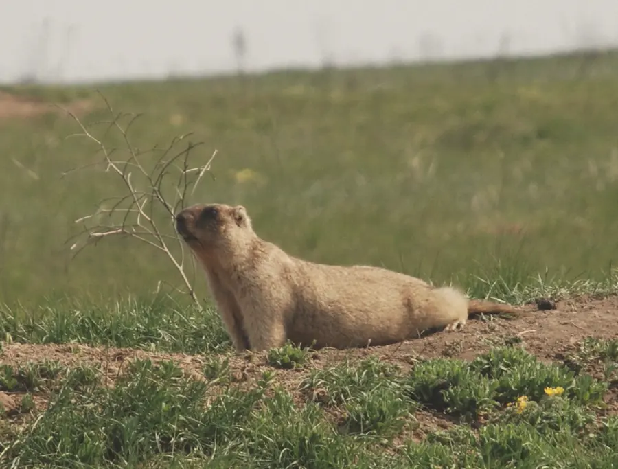
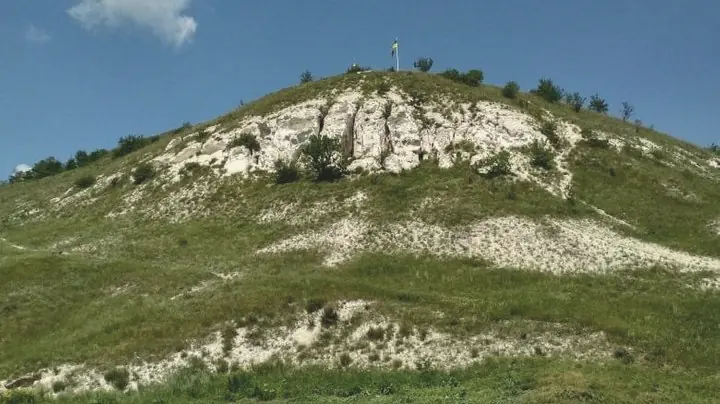
У нас удома є гора Могила-Мечетна. Вона 367 метрів. У Данії найвища точка — 170 метрів, і вона називається Møllehøj. Це означає, що наша гора вдвічі вища за всю Данію одразу.
Але данці все одно туди ходять і фотографуються. Мабуть, важлива не висота, а те, що це твоє найвище.
Ваня
Сіверський Донець починається не в Україні. Він тече звідти, де зараз погано, і все одно приходить до нас. 1053 кілометри — це втричі більше, ніж уся Темза.
Я думаю, річка не винна, звідки вона почалася. Важливо, куди вона дотекла і кого напоїла. Якби річки вибирали собі початок, вони б, мабуть, текли по колу.
Ксюша
Бабак — це такий великий ховрах. Він стоїть стовпчиком і свистить, коли бачить когось чужого. Данською він murmeldyr, але тут його ніхто не бачив. У нас удома їх ціле поле, і вони всі дивляться в один бік.
Єлизавета
— Чому бабак свистить?
— Бо співати його ніхто не вчив.
Записала Мія
У Данії 170 метрів угору — це похід.
У нас 367 — це просто дорога до бабусі.
Записав Сашко
Ксюша, Ваня, Сашко, Мишко, дві Олександри, Мирослав, дві Софії, Аліса, Мія, Єлизавета.
Редакція: пані Анастасія.
Статті — з паперового випуску №1 від 19 вересня 2026 року. Довідкові цифри про Луганщину взято з відкритих джерел: Фарватер.Схід, Україна Інкогніта, Енциклопедія Сучасної України.
Другий номер ми зробили про Харків. Спочатку здавалося, що це буде просто: велике місто, метро, площа Свободи, університети. А потім виявилося, що за кожною назвою стоять люди — ті, кого розстріляли сто років тому, і ті, хто сьогодні сидить із нами в сусідньому класі.
Тут є секретна справа №008, зниклі письменники, гра про планету після війни, порівняння української і данської школи — і жінка, яку одна з нас намалювала б замість карти України.
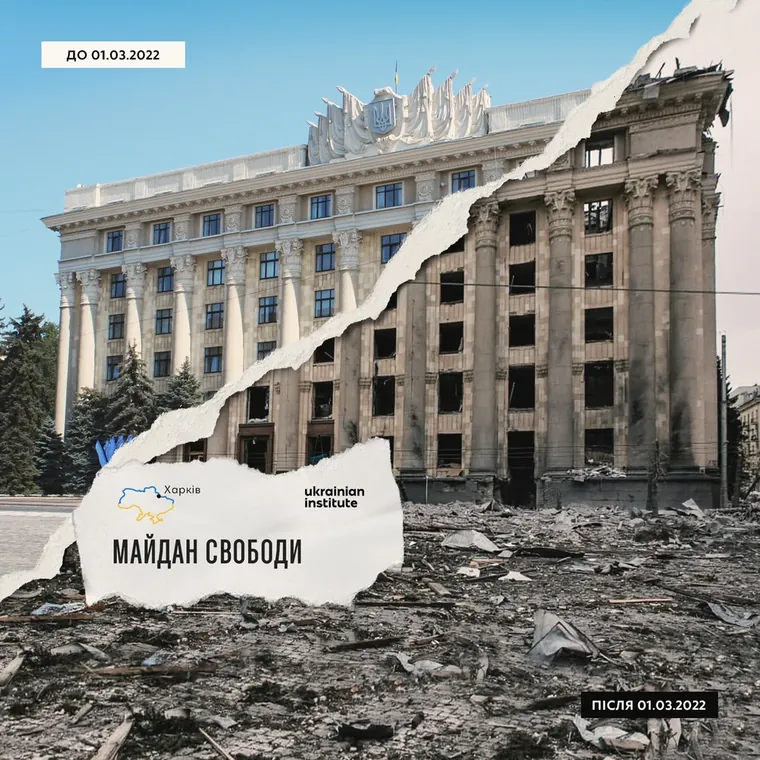
Одного дня до школи прийшов шпигун із секретним завданням — дізнатися якомога більше про Харків. Він ходив школою та розпитував людей про це відоме українське місто.
Він дізнався, що Харків розташований на сході України та є другим за населенням містом країни. Місто має давню історію, яка налічує багато століть. Харків заснували у XVII столітті, а згодом він став великим промисловим, науковим і культурним центром.
Особливо відома площа Свободи — одна з найбільших площ Європи. Також у Харкові є Держпром, який вважають визначною пам’яткою конструктивізму. У місті працює багато університетів, серед яких Харківський університет імені Каразіна, а тому Харків відомий як важливий освітній центр.
Шпигун дізнався і про відомі місця для відпочинку: парк Горького, Саржин яр, Харківський зоопарк та численні театри й музеї. Ще він записав, що Харків має власну футбольну історію та відомий спортивними традиціями.
Чим більше інформації він отримував, тим більше розумів, наскільки великим і цікавим є Харків. Але на цьому його розслідування не закінчується. Я ще повернуся.
Олександра · таємний агент «Родоводу»
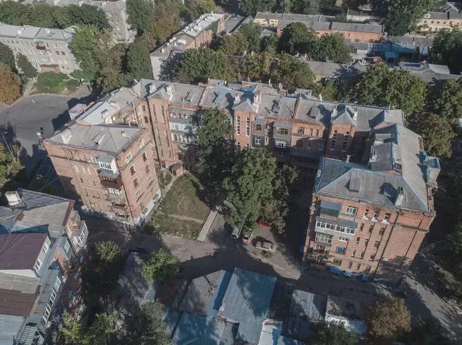
Коли ми говоримо про Харків, то часто згадуємо велике місто, університети, метро, площу Свободи. Але у Харкова є ще одна історія — історія українських письменників. І, чесно кажучи, багато хто з нас навіть не знає їхніх імен.
Наприклад, Михайло Яловий. Він народився у 1895 році. Був письменником, поетом і одним із представників українського культурного руху 1920-х років. У 1933 році його заарештували за сфабрикованими звинуваченнями, а згодом засудили до розстрілу.
А ще був Микола Хвильовий. Він народився у 1893 році. Писав оповідання, романи та багато говорив про розвиток української культури. Він виступав за те, щоб українська література мала свій власний шлях.
У 1933 році, після арешту його близького друга Михайла Ялового та посилення репресій проти української культури, Хвильовий покінчив життя самогубством.
І ще Микола Куліш — драматург, чиї п’єси були дуже популярними. Ми дивились виставу «Мина Мазайло» на уроці. У 1937 році Миколу Куліша розстріляли в урочищі Сандармох.
Мені здається дивним, що ми можемо знати безліч сучасних блогерів, співаків і героїв фільмів, але не знати людей, які створювали українську культуру.
Харків — це не тільки місто на карті. Це ще й місто людей, які писали, мріяли, сперечалися і боролися за те, щоб українська культура не зникла.
Мія
Будинок «Слово» в Харкові будували для письменників. З 66 квартир майже кожну згодом спіткав арешт.
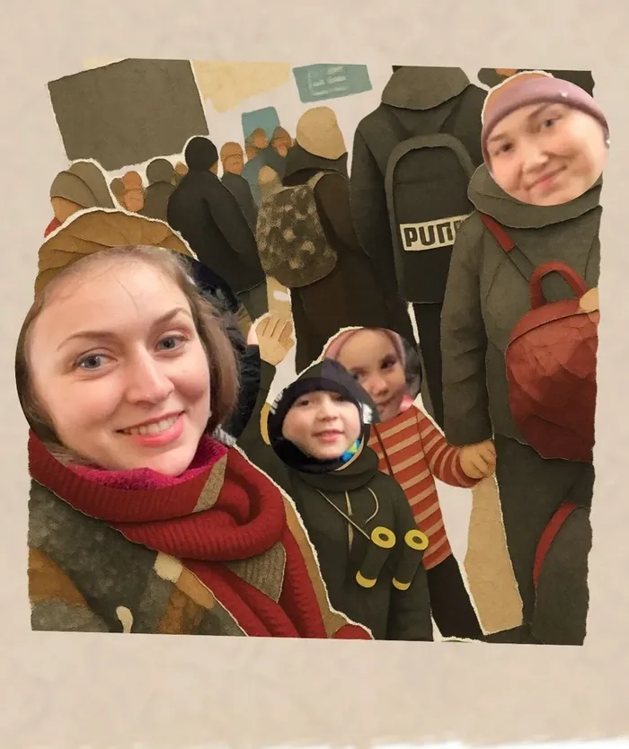
У нашій школі є багато людей. Прекрасних, цікавих, незвичайних. Іноді ми бачимо їх щодня, вітаємося в коридорі, перекидаємося кількома словами — і навіть не здогадуємося, яка історія стоїть за цією людиною. А дарма.
Досліджуйте людей, які поруч із вами. Знайомтеся з ними. Запитуйте: «А звідки ти?», «А як ти сюди потрапила?», «А що з тобою було?» Бо можна просто пройти повз — і прогавити неймовірну історію з життя.
Люди — книги. Тільки живі. Їх не придумав письменник. Вони самі прожили кожну сторінку. Деякі сторінки в них написані сльозами, деякі — сміхом, деякі — усвідомленням, а деякі хочеться перечитувати знову і знову.
Однією з таких людей для мене є Алекс. Алекс — вчителька молодших класів нашої школи «Родовід». І я дружу з нею просто тому, що вона така, яка є. Весела, активна, жива, з неймовірною енергією.
Але коли ми з класом вирішили взяти у неї інтерв’ю, я раптом зрозуміла, що знаю так мало про подругу. Ти можеш дружити з людиною роками, а потім одного дня просто запитати: «Алекс, а звідки ти?» І відкривається цілий новий розділ…
Так я дізналася ще одну частинку її душі. Ще одну історію, яка вражає, як хороша книга. Тільки ця книга — не вигадана. Вона прожита. Продихана. В ній відчувається пульс.
Це історія харків’янки, яка до війни жила своїм звичайним життям. Працювала, виховувала дитину, мала свої турботи, плани, будні. Просто жила. А потім настав момент, коли життя змусило її дуже швидко зрозуміти, хто насправді друг, а хто ворог.
Коли ти вже не розмірковуєш про великі геополітичні речі. Коли тобі просто потрібно врятувати своє життя і життя своєї дитини. Коли посеред дороги ти починаєш товаришувати з людиною, яку ще вчора навіть не знав. Коли навколо паніка, десь зовсім поруч стріляють, а ти видавлюєш усмішку, щоб вберегти дитину від травми, створити позитив серед бурі.
Мені здається, саме в таких моментах і відкривається справжня людина. Для мене Алекс — це не просто Алекс. Вона стала для мене маленьким образом України. Справжньої мами. Справжньої людини. Патріота.
Жінки, яка сьогодні говорить українською, в пошуках життя: голосно, весело. І при цьому носить у собі величезний багаж пережитого. Як наша країна. Бо Україна теж саме така.
У неї є травма. Є біль. Є історія, яку неможливо переписати. Але є і життя. Є гумор. Є сила. Є характер. Є прекрасні люди посеред дороги, підтримка інших, жарти тоді, коли зовсім не до сміху, і все одно йти далі.
Якби колись мене попросили намалювати Україну — не карту, не герб, не традиційний образ жінки у віночку — я, мабуть, намалювала б Алекс. Харків’янку. Ту, яка покаже, де Градусник у Харкові, зустрінеться з вами на Стрілці і розповість на лавочці круту історію, що таке Україна.
Українка. І, можливо, саме в цьому для мене її найбільша історія. Не тільки в тому, що з нею сталося. А в тому, ким вона стала після цього.
Ми часто думаємо, що великі історії десь далеко. Що їх треба шукати в книжках, музеях, архівах, документальних фільмах. А вони можуть сидіти поруч із вами. У сусідньому класі. За сусіднім столом. Стояти з вами в коридорі й говорити: «Привіт».
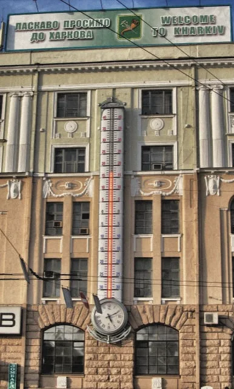
Просто запитайте: «До речі, я тебе ніколи не запитувала, а звідки ти?» Бо, можливо, перед вами стоїть ціла книга. І, можливо, це книга, яку ви пошкодуєте, що так і не прочитали.
пані Анастасія
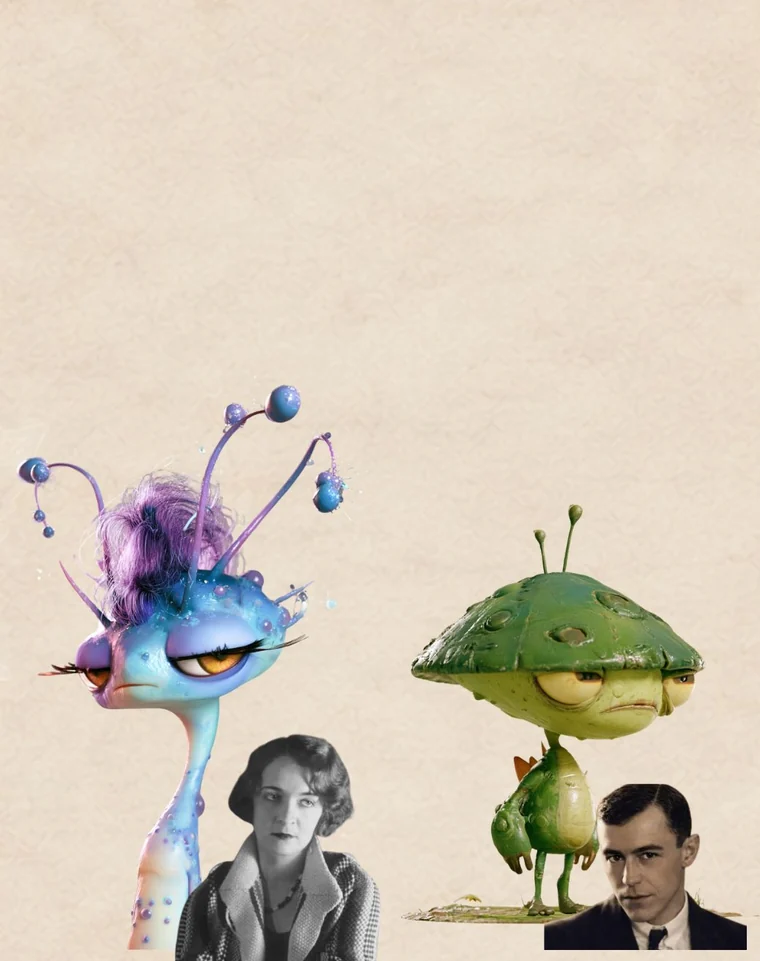
На уроці Філософів ми грали в гру. Це була сценарна гра.
«Арея» — це гра про планету, яка пережила війну. Міста були зруйновані, люди стали бідними, а молодь хотіла змінити своє життя. Після війни до Ареї прибувають посланці Імперії Орбіс і обіцяють людям кращий світ: їжу, школи для дітей, театри для митців і лабораторії для науковців.
Під час гри ми отримуємо різні ролі та картки монстрів і повинні приймати рішення. Проте ми навіть і не підозрювали, що за кожним монстром стоїть справжня людина з Будинку «Слово» в Харкові. Наприклад, Монстр №4 пов’язаний із Лесем Курбасом, який дуже любив театр.
Було складно грати когось і думати за когось, але це був цікавий досвід і здивування в кінці. Мені сподобалося, що через гру можна дізнатися більше про українську історію.
Олександра
Я вчився і в українській, і в данській школі, тому можу порівняти. І одразу скажу: ідеальної школи я ще не знайшов.
В українській школі мені більше подобається саме навчання. Там якось серйозніше ставляться до знань. Вчителі більше пояснюють, більше вимагають і, якщо чесно, іноді це навіть бісить. Але зате ти реально щось знаєш після уроку, а не просто просидів 45 хвилин.
І ще українська школа — це як дім. Ти говориш українською, розумієш жарти, знаєш ці пісні, меми, приколи. Навіть якщо урок складний, все одно є відчуття: «Окей, я тут свій».
А от у данській школі мені більше подобаються люди. Вчителі тут добріші і з ними якось легше. Діти теж більш спокійні. Ніхто особливо не дивується, якщо ти думаєш по-іншому або робиш щось не так, як усі.
Але іноді мені здається, що тут занадто все спокійно. Типу: «Ну не хочеш — не роби». А я такий: а вчитися тоді коли будемо?
Тому для мене українська школа — це більше про знання і відчуття дому. Данська — більше про людей, свободу і доброту. Якби можна було змішати дві школи, я б залишив навчання з української, а людей і ставлення — з данської. І, можливо, тоді нарешті вийшла б школа, в яку не хочеться тікати після першого уроку.
Мирослав
Спи, мій Харкове, стомлений, сильний. Ніч укрила твої площі й сади. Дух твій вічний, незламний і вільний, бережуть українські зірки.
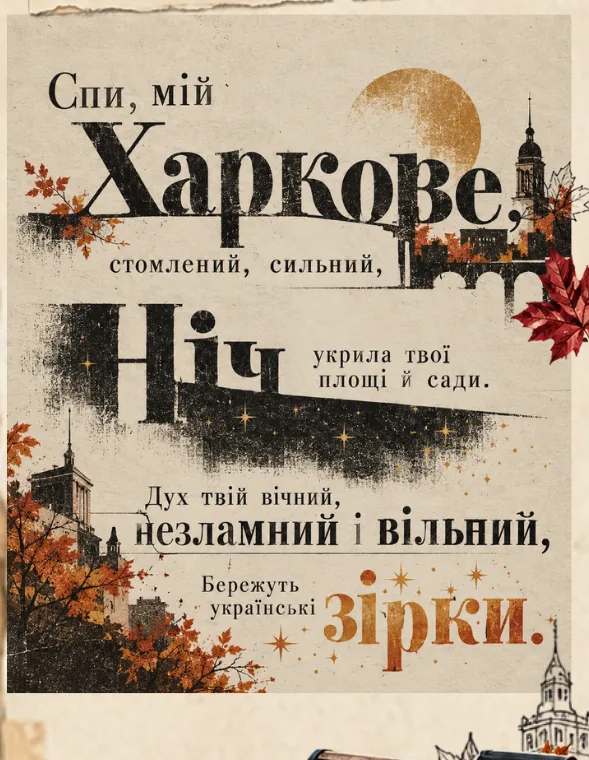
Заснований Харків — козацька фортеця на кордоні Дикого поля.
Відкрите метро в Харкові. Копенгагенське з’явилося аж у 2002-му.
Гектарів має площа Свободи — одна з найбільших площ Європи. Це приблизно 16 футбольних полів.
Харківські фізики вперше в СРСР розщепили ядро атома — через кілька місяців після британців.
Нобелівські лауреати пов’язані з Харковом: Мечников, Ландау і Кузнець.
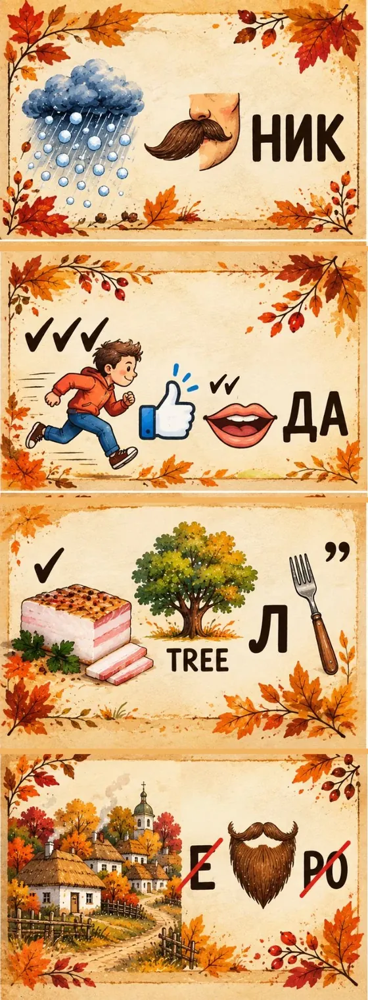
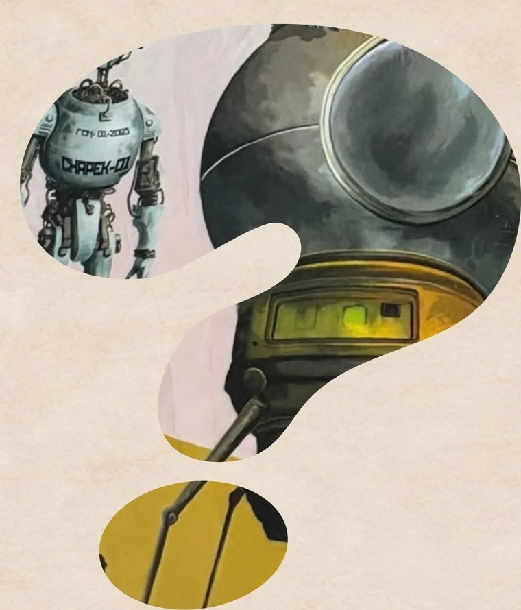
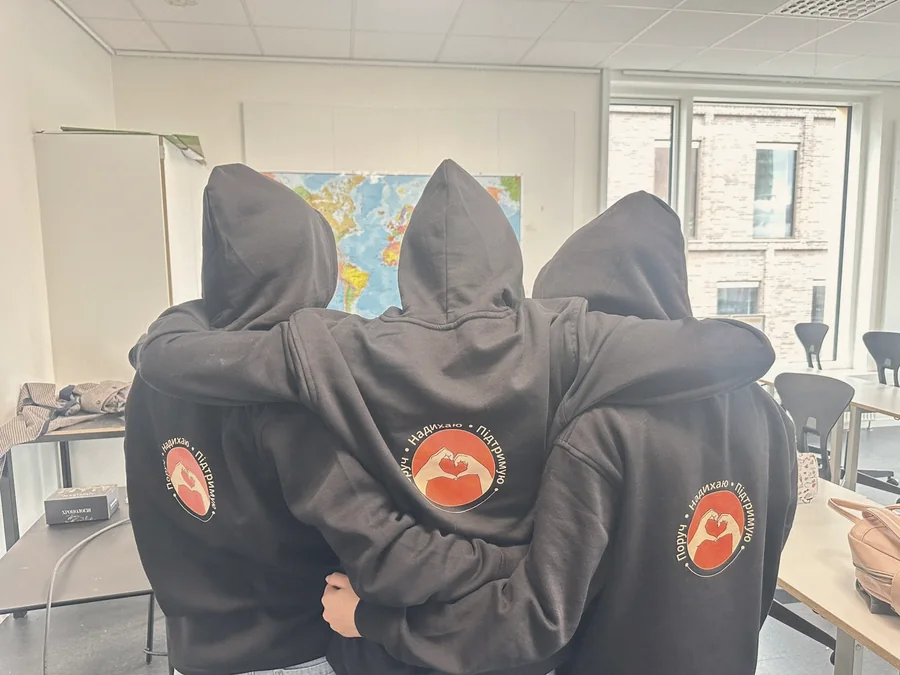
Усі учні класу «Філософи».
Редакція: пані Анастасія.
Факти про Харків — із Вікіпедії, Великої української енциклопедії та матеріалів Суспільного. Вірш — Сергія Жадана.
Ми друкуємо те, про що діти думають насправді — а не те, що гарно виглядає зручно виглядає в шкільному звіті.
Це газета українських дітей, які живуть у Данії і щодня перекладають себе з одного світу в інший. У газеті цього робити не треба.
Вчителі пропонують тему номера голосуванням. Діти опрацьовують запропоновані статті — щоразу різні.
Цілі два тижні. Текст може бути на три речення — це теж текст.
Матеріал іде в номер, якщо після читання автор не передумав.
Верстка, друк, сайт. Паперовий номер роздають у школі в суботу.
Викладає в класі «Філософи» і збирає номер докупи. Усі питання про газету — до неї.
Учні старших класів. Постійного складу немає — пишуть ті, хто прийшов цього разу. Тому в кожному номері інші імена.
Школа єднає українські сім'ї в Копенгагені й допомагає батькам розвивати знання та інтерес дітей до всього українського. Газета — один із її проєктів.
Ми зайняті Ми читаємо все, що приходить.
Знайди пані Анастасію в класі «Філософи» і принеси текст. Навіть якщо це три речення.
Підійдіть до пані Анастасії в школі й запитайте. Так швидше, ніж листом.
Пишіть школі — вона координує всі проєкти, зокрема газету.
Напишіть нам листа Підійдіть і запитайте.
Вона викладає в класі «Філософи» і веде газету. Це найшвидший спосіб віддати текст, запропонувати тему або дізнатися, коли вийде наступний номер.
Клас «Філософи» · школа «Родовід» · Ny Carlsbergvej 99
Запис, розклад і новини — на сайті школи.
A newspaper made by children at Rodovid, the Ukrainian school in Copenhagen.
Teachers put the topics to a vote; the children then work the chosen stories — a different group each time. They write for a week and read everything aloud to each other before it goes to print.
Issue #1 opens with a secret agent report from the school library, an interview with Olena Cherepnia from Sievierodonetsk about the first day of the war, and the school's new mentors — who mainly want hoodies.
The newspaper itself is written in Ukrainian by the children.
Age of the authors
Between issues
First issue published
En avis skrevet af børnene på Rodovid, den ukrainske skole i København.
Lærerne foreslår temaerne, børnene stemmer og bearbejder derefter historierne — en ny gruppe hver gang. De skriver i en uge og læser det hele højt for hinanden, inden det går i trykken.
Nummer 1 indeholder en hemmelig agentrapport fra skolebiblioteket, et interview med Olena Tjerepnja fra Severodonetsk om krigens første dag, og skolens nye mentorer — som mest af alt ønsker sig hoodies.
Selve avisen er skrevet på ukrainsk af børnene.
Forfatternes alder
Mellem numre
Første nummer